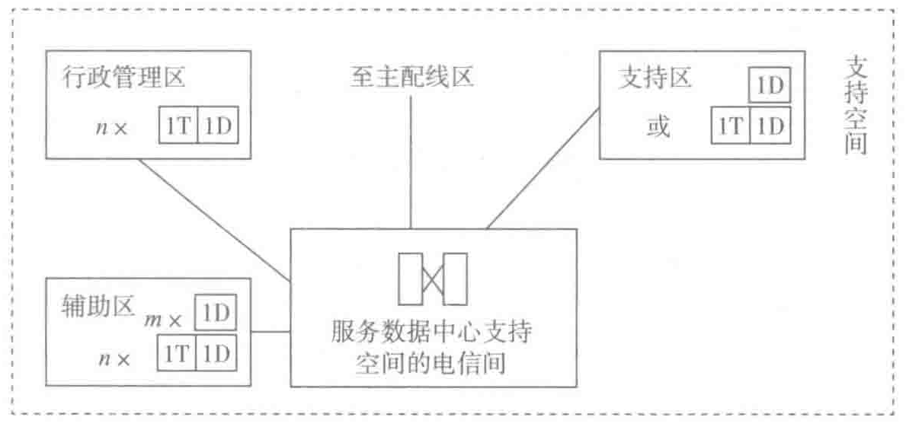

| 应 用 | 传 输 介 质 | 类 别 | 最 长 距 离 | 波 长 |
|---|---|---|---|---|
| 10GBASE-LX | 单模 | — | 10km | 1310nm |
| 10GBASE-EX | 单模 | — | 40m | 1550nm |
| 10GBASE-LRM | 所有多模 | — | 220m | 1300nm |
| 10GBASE-LX4 | 所有多模 | — | 300m | 1300nm |
| 10GBASE-LX4 | 单模 | — | 10km | 1310nm |
同水平布线系统一样，主干布线系统也应采用 OM3/OM4 多模光缆、单模光缆或 6A 类及以上对绞电缆，传输介质各组成部分的等级应保持一致；两芯的光纤在布放时，光纤适配器应采用 LC 接口；12 芯及以上的光缆主干或水平布线系统宜采用多芯 MPO/MTP 预端接系统。
主干布线系统应采用冗余配置。
3. 支持空间的布线设计
行政管理区域应按照 GB 50311—2016《综合布线系统工程设计规范》实施布线，所有水平线缆连至数据中心电信间。
辅助区的测试机房、监控控制台和打印室需要比标准办公工作区配置更多的信息插座和铺设更多的线路。可咨询用户方和相关技术人员来确定具体的数量。此外，监控中心的大量显示设备（如监视器和电视机）也需要数据网络接口。
支持区的配电室、柴油发电机房、UPS 室、电池室、空调机房、动力站房、消防设施用房、消防和安防控制室等，房内至少需要设置一个电话信息点，另外机电室需要至少一个数据网络接口以连接设备管理系统。
支持空间各个区域的信息插座的数量确定可参照图 7-14。

4. 基础的数据中心布线架构
一个基础的数据中心包含单一的进线间、一个或多个电信间、一个 MDA、和几个 HDA，基础的数据中心布线架构如图 7-15 所示。